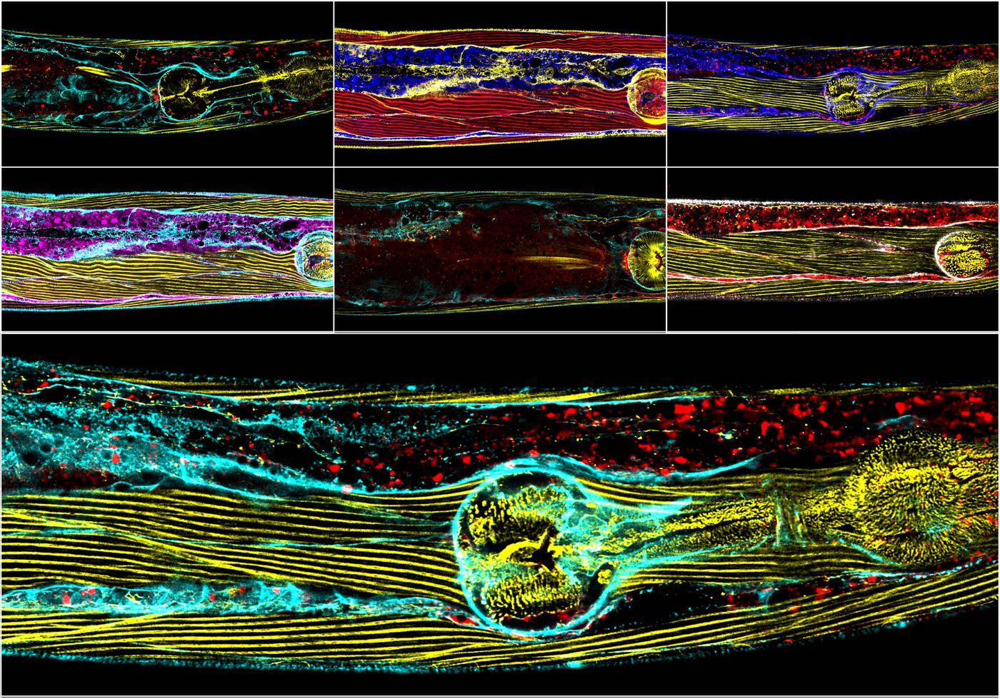
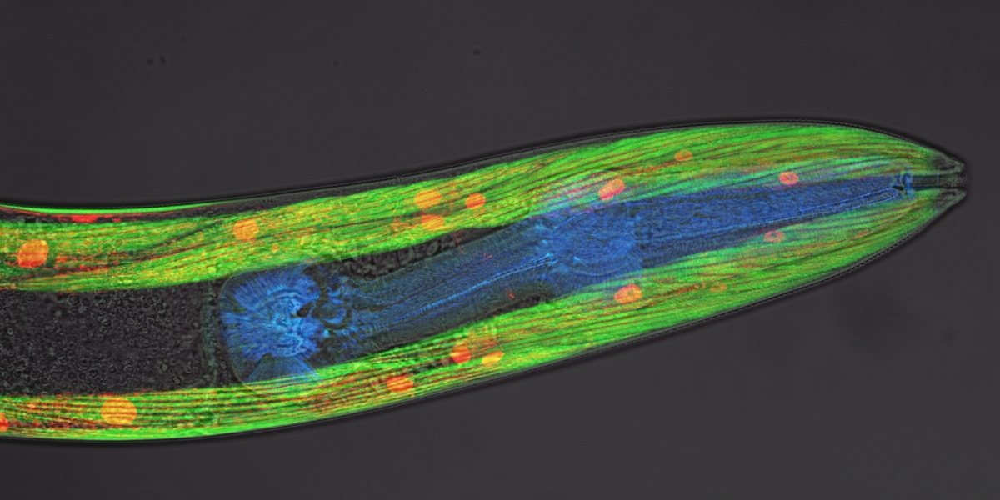
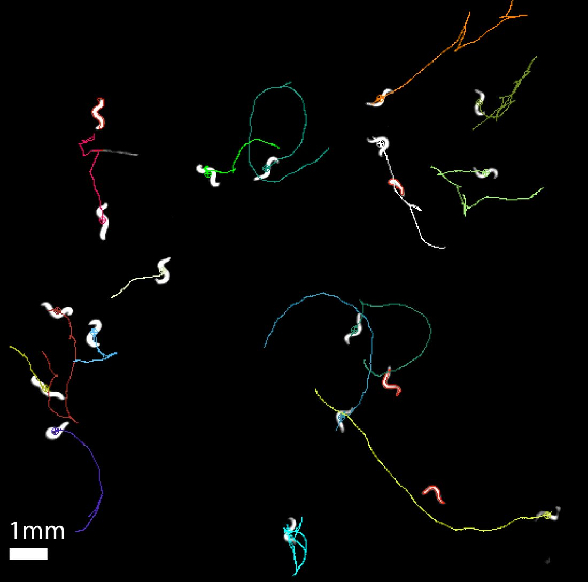

Research
One question, in five parts. An animal is not separate from the universe, it is the universe doing something, a pattern that keeps itself going. How does that pattern sample what is around it, work out what it has sampled, choose an action, and produce the force to carry it out? Well enough, and long enough, to persist.

That question is older than the lab. It is a physics question wearing biology's clothes. Living matter is matter, subject to the same fields, gradients and loads as everything else. One thing is different. It has to use what it detects in order to go on existing. The boundary between an animal and the rest is maintained by the animal, not issued to it. So the division between sensing the world and sensing the body does not hold up. A worm reading a magnetic field and a worm reading the load on its own muscle are doing the same thing to the same universe. Only the place where the measurement lands has changed.
Every project here is part of that loop, and the projects are not independent. The instrument built to measure one stage is usually what makes the next stage measurable.
Part one. Sampling the universe
An animal can act only on information it can obtain. Some of what it needs is physically hard to get at.
The Earth's magnetic field is the extreme case. It is extremely weak, and no receptor has been identified in Caenorhabditis elegans. Even so, we showed that the animal orients to it. We also showed that the AFD sensory neurons are required. The question we want settled is the transduction step. Does the signal become available magnetocalorically, magnetomechanically, or some other way? A worm is well suited to settling it. Candidate mechanisms can be removed genetically, and the readout is a behavior we can already quantify. A mechanism here would be the first magnetic transduction mechanism described in any animal.
Other physical quantities are easier to detect and no simpler to understand. Temperature has a receptor. Humidity does not. We showed that the animal infers it by combining mechanosensory and thermosensory pathways. That is a clue about how sensing is assembled in general. The mechanics of the surroundings matter too. Solid and aqueous environments demand different things of the same body.
Part two. Deciding what it means
Raw signals are not instructions. Something has to weigh them, and commit the animal to a course of action. That something is not only neurons.
A manuscript in revision shows that the AMsh glia set the duration of touch induced escape responses. That places a non-neuronal cell inside a sensory decision, rather than in support of one. Our earlier work showed that dopamine and serotonin select between crawling and swimming. It also showed that behavior is organized in hierarchies, and that those hierarchies reorganize at environmental transitions. Deciding is partly chemical, partly circuit level, and partly done by cells nobody was watching.
Part three. Producing force, and knowing that you did
Action is mechanical work. Mechanical work has to be monitored while it happens, or it cannot be corrected. Here the physical object under measurement is the animal. Proprioception is not a second kind of sensing, and it is not sensing turned inward, because there was never a wall for it to turn at. A strain gauge in a muscle and a thermoreceptor in a neuron are both reading the state of the universe at the place where that cell sits.

Our work on the mechanoreceptor pezo-1 shows that it is required for normal crawling. Its distinct isoforms do different jobs, including the regulation of food intake. Its expression in muscle itself contributes differently to swimming and to crawling. We read that last result as being about proprioception rather than strength. Muscle is at once the actuator and a sensor reporting on its own state. That dual role is the hinge between this part of the loop and the next.
Part four. How systems respond to disruption
Nothing in the loop is guaranteed to keep working. Persistence is not the ability to run a circuit under the conditions it was built for. It is the ability to carry on when something changes without warning, in the circuit or in the universe the circuit was tuned to. So we perturb the loop deliberately, in three ways, and ask what the animal does about it.
Disruption from within the genome
Duchenne muscular dystrophy is our main case, and the reason most of the lab works on it. Losing dystrophin damages the actuator. Because muscle is also a sensor, it corrupts what the animal knows about its own body. The disease is a lesion in two places on the loop at once. We put load on an animal using burrowing, a natural behavior that demands far more force than crawling on a plate. Dystrophic muscle declines faster under it. That result appeared in PNAS in 2019. It bears on a live clinical question about how much exercise is advisable for patients.
The calcium side of the story then moves into human muscle. We follow calcium handling, and the proteins that set the resting calcium level. We ask what happens to both when dystrophin is reduced. The work runs in immortalized human striated and smooth muscle lines. It also runs in CRISPR edited isogenic lines, where a dystrophic cell and its control differ in one gene and nothing else. Mouse ex vivo physiology joins in 2027. Smooth muscle is the newest arm. It is affected in patients and almost never studied.
Disruption from the physical environment
The other way to break the loop is to change the universe rather than the animal. We raise animals for several generations under simulated Martian gravity, and under hypomagnetic conditions. That removes two of the physical constants nothing on Earth has developed without. We then ask what accumulates over generations. The interest is partly practical, since long duration spaceflight exposes people to both. It is also fundamental. It asks which features of an animal were contingent on the planet it evolved on.
Disruption from the biotic environment, and what gets inherited
A threat an animal survives can change what its descendants do. We independently validated the transgenerational inheritance of learned pathogen avoidance in Caenorhabditis elegans, published in eLife in 2025. Information about a disruption outlived the animal that encountered it. Replicating a contested result is part of the point. A mechanism this surprising deserves independent hands.
Together these three say something the individual papers do not. A genetic lesion, a changed planet and a remembered infection are different perturbations of one loop. Adaptability to the unpredicted is what persistence actually consists of.
Part five. Building what does not exist
To go where these questions lead, we need instruments that do not exist. Others exist and cost more than an R2 laboratory can justify. We treat that as part of the research rather than an obstacle in front of it. We build the thing.
The assays came first. The swimming and crawling comparison let us ask how an animal selects a motor program. A family of burrowing assays let us put a measured mechanical load on an animal, and watch what the load does. Those assays are the backbone of the muscle work. A long series of magnetic assays followed, with the pulser built to deliver the fields they need.
Then the instruments. A worm tracker costing about thirty dollars, published so that classrooms can use it as well as laboratories. RGBCaMP, a reporter animal that lets calcium be read in several tissue compartments at once rather than one at a time. And WINK (Worm Imaging and Kinematics), the analysis platform the lab now runs on. WINK segments the animal and divides the body into segments. It follows the traveling bending wave along the body, and reads calcium per segment in several channels. Sensing, deciding and force production can then be observed in one animal in one recording. WINK is modular, and most of its modules were written because a specific experiment could not otherwise be analyzed.

This is not a sideline. About a fifth of the lab's published output is a method, an assay, a tool or a software release rather than a result. The tools are the reason the results were obtainable. Our standing rule for the automated analysis is simple. The machine is validated against blinded human scorers, rather than trusted because it is automated. Where the two disagree, we report the disagreement. This work is supported by an Anthropic AI for Science award. It is also the way into the lab for someone who arrives stronger in code, or at a soldering iron, than at a bench.
How the parts hold each other up
The work cross-loads, and the tools carry the load between the parts. The burrowing assay was built to put mechanical demand on dystrophic muscle. It is now how we ask what an animal does in a solid environment. Calcium imaging built for sensory neurons is what reads out muscle. WINK, written for one project, now measures all of them. The pezo-1 work explains why a muscle disease is also a sensory problem. A student who joins on one part learns instruments that belong to the others. That is why people here appear on each other's papers.
Where the lab's weight actually sits
This is worth saying plainly, since a prospective student will work it out anyway. Duchenne muscular dystrophy carries most of the lab's people and most of its funding. Most candidates arrive wanting to work on it. The sensory and magnetic parts of the loop have produced a comparable share of the publications, with a fraction of the hands. They are thin rather than finished. If you want a crowded, well supported project, the muscle work is it. If you want a question largely to yourself, with the instruments already built and nobody ahead of you in the queue, that is the other end of the loop.
Funding and history
The lab opened at Illinois State University in 2015 and has been externally funded throughout. More than 220 people have trained in it since.
Current support comes from the National Institutes of Health, through an R15 award from the National Institute of Arthritis and Musculoskeletal and Skin Diseases that runs to 2029, and from an Anthropic AI for Science award supporting the analysis platform. The muscular dystrophy program has been carried by three successive NIH R15 awards.
The magnetic orientation work was built on National Science Foundation support, including a $638,000 award in 2018 to ask how animals detect magnetic fields. The confocal imaging the lab depends on sits in a university microscopy facility established with a $661,000 NSF instrumentation award the same year.
Work in preparation is aimed at the Department of Defense Duchenne program, at a further NSF proposal on the physics of magnetic transduction, and at an R01 built on the smooth muscle work.
How we measure things
Behavioral analysis and assay development. Confocal and widefield microscopy. Calcium imaging and ratiometry. Immunohistochemistry, cloning and transgenesis, CRISPR, RNA interference and quantitative PCR. Optogenetics and magnetic coil systems. High throughput automated assays, and human muscle cell culture. Mouse ex vivo physiology from 2027. Plus instruments and analysis software we write ourselves.